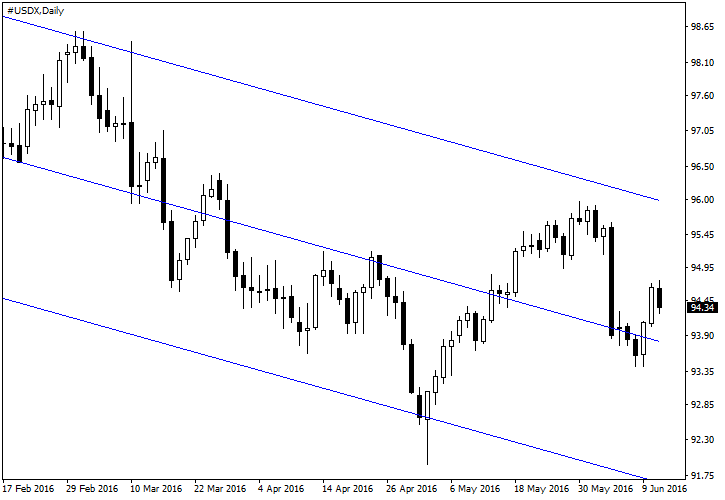

<!DOCTYPE html>
<html>
</html>
<head>
  <meta charset="utf-8">
  <meta http-equiv="X-UA-Compatible" content="IE=edge">
  <title>外汇站（fx-z.com） - 外汇市场如何赚钱？</title>
  <meta name="description" content="">
  <meta name="viewport" content="width=device-width, initial-scale=1">
  <meta name="robots" content="all,follow">
  <!-- Bootstrap CSS-->
  <link rel="stylesheet" href="vendor/bootstrap/css/bootstrap.min.css">
  <!-- Font Awesome CSS-->
  <link rel="stylesheet" href="vendor/font-awesome/css/font-awesome.min.css">
  <!-- Google fonts - Roboto-->
  <link rel="stylesheet" href="https://fonts.googleapis.com/css?family=Roboto:400,300,700,400italic">
  <!-- owl carousel-->
  <link rel="stylesheet" href="vendor/owl.carousel/assets/owl.carousel.css">
  <link rel="stylesheet" href="vendor/owl.carousel/assets/owl.theme.default.css">
  <!-- theme stylesheet-->
  <link rel="stylesheet" href="css/style.default.css" id="theme-stylesheet">
  <!-- Custom stylesheet - for your changes-->
  <link rel="stylesheet" href="css/custom.css">
  <!-- Favicon-->
  <link rel="shortcut icon" href="img/favicon.png">
  <!-- Tweaks for older IEs--><!--[if lt IE 9]>
    <script src="https://oss.maxcdn.com/html5shiv/3.7.3/html5shiv.min.js"></script>
    <script src="https://oss.maxcdn.com/respond/1.4.2/respond.min.js"></script><![endif]-->
</head>
<body>
  <div id="all">
    <div class="container-fluid">
      <div class="row row-offcanvas row-offcanvas-left"> 
        <!--   *** SIDEBAR ***-->
        <div id="sidebar" class="col-md-4 col-lg-3 sidebar-offcanvas">
          <div class="sidebar-content">
            <h1 class="sidebar-heading"> <a href="https://fx-z.com">fx-z.com</a></h1>
            <p class="sidebar-p">介绍外汇相关的基本知识，告诉您如何进行自己的技术面和基本面分析，讲解先进的交易理念，并且为您阐述失败交易者与专业交易者之间的真正区别。 </p>
            <p class="sidebar-p">通过这些课程的学习，您将学会如何根据自己的优势来应用情绪分析，还将了解真实世界的事件会对货币汇率产生什么影响，央行在外汇市场中所发挥的作用，以及交易者在颇受欢迎的即期外汇交易中有哪些选择方案。 </p>
            <ul class="sidebar-menu">
                <!-- Link-->
                <li class="sidebar-item"><a href="https://fx-z.com" class="sidebar-link">首页</a></li>
                <!-- Link-->
                <li class="sidebar-item"><a href="cihui.html" class="sidebar-link">外汇词汇</a></li>
                <!-- Link-->
                <li class="sidebar-item"><a href="ebook.html" class="sidebar-link">获取外汇电子书</a></li>
            </ul>
            <p class="social"><a href="https://www.forextimechina.com.cn/zh?form=IZIN" target="_blank"data-animate-hover="pulse" class="external facebook"><i class="fa fa-eur"></i></a><a href="https://www.forextimechina.com.cn/zh?form=IZIN" target="_blank" data-animate-hover="pulse" class="external gplus"><i class="fa fa-gbp"></i></a><a href="https://www.forextimechina.com.cn/zh?form=IZIN" target="_blank" data-animate-hover="pulse" class="external twitter"><i class="fa fa-rmb"></i></a><a href="https://www.forextimechina.com.cn/zh?form=IZIN" target="_blank" title="" class="external instagram"><i class="fa fa-dollar"></i></a><a href="https://www.forextimechina.com.cn/zh?form=IZIN" target="_blank" data-animate-hover="pulse" class="email"><i class="fa fa-money"></i></a></p>
            <div class="copyright text-center text-md-left">
             
              
            </div>
          </div>
        </div>
        <!--   *** SIDEBAR END ***  -->
        <!--   *** DETAIL ***-->
        <div class="col-md-8 col-lg-9 content-column white-background">
          <div class="small-navbar d-flex d-md-none">
            <button type="button" data-toggle="offcanvas" class="btn btn-outline-primary"> <i class="fa fa-align-left mr-2"></i>菜单</button>
            <h1 class="small-navbar-heading"> <a href="https://fx-z.com/1-9.html">下一篇 </a></h1>
          </div>
          <div class="row">
            <div class="col-xl-10">
              <div class="content-column-content">
                <h1>外汇市场如何赚钱？</h1>
            <p>
    外汇交易的赚钱方式为买入将上涨的货币，或卖出将下跌的货币。实际上，无论您是认为即将公布的数据将利好欧元，进而买入 EUR/USD，还是认为行情动态将利空美元，进而卖出美元并将欧元作为载体，这都不重要。您可以选择将欧元作为载体，因为它具有较高的流动性，但您同样可以通过买入 NZD/USD 来表达您对美元的消极看法，这意味着您在卖出美元。
</p>
<p>
    外汇交易是一场零和游戏：一方赢，另一方输。如果您以 0.8500 买入 AUD/USD，然后以 0.8700 卖出，那么您盈利 200 点。同样，以 0.8500 将该货币对卖给您的人有可能机会亏损这 200 点。可以想象的是，卖家心情不佳，因为他买入时澳元可能为 0.8300，使他已实现 200 点的现金利润，但事实是，如果他一直持仓不动，那么他将获得高于 200 点的盈利，而不是让您获利。
</p>
<p>
    我们还可以注意到，卖家或许已经关闭套期保值头寸。比如说，套期保值者有一笔债务，或者卖空一笔以欧元计价的资产并买入欧元作为资产头寸货币部分的对冲。如果资产上涨（为他造成资产损失），但欧元下跌，那么套期保值者将获得一些盈利，以抵消标的资产的损失。一旦他结清资产头寸，那么他不再需要货币头寸。事实上，套期保值头寸的持有时间远远长于通常的零售外汇交易，虽然在套期保值的情况下，标的资产可能是另一种包括期权在内的货币头寸。
</p>
<p>
    同样，如果您以 0.8700 卖出澳元后，它继续上涨至 0.8900（举例说明），那么您将有可能成为机会亏损者。这种亏损并不是真正的现金损失，但它一样带来挫败感。交易导师提醒交易者不要为机会损失而感到懊恼。他们建议您永远不要纠结于“本来能够”做的事情。这种做法在口语中被称为“我可以，我能够，我应该”。
</p>
<p>
    如果您先卖出，然后买入，那么从技术上而言，您在卖空货币对中首个被指定的货币。例如，你以 1.0950 卖出 USD/CAD，然后以 1.0900 买回它。通过卖出美元和买入加元，您已盈利 50 点。但没人会指责你卖空美元，因为他们知道您买入加元的原因是您喜欢加拿大，而且用美元支付加元。
</p>
<p>
    做空策略也可以让您获得与做多策略相同的盈利，虽然许多人亲眼发现，预测上行价格趋势比预测下行价格趋势更加简单。通常，做空卖出在外汇中并不是一种耻辱。与其他资产类型相比，这是外汇交易一个更大的优势。它仍然“卖空”一些货币，同时买空一些货币，而且没有类似做空股票或商品的负面含义。如果您做空一支股票，这是因为您认为该公司出现了问题，或至少被市场高估。做空者被指责为股市的“破坏”力量，而且在危机情况下，例如始于 2008 年的银行危机，做空有时是被禁止的。几乎所有国家都对银行设有做空禁令，包括美国、英国、澳大利亚和大多数欧洲国家。1929 年至 1987 年股市大崩溃时，人们将一切错误归咎于股市卖空者，即使崩溃的原因显然还有许多其他因素。
</p>
<p>
    在股市中，做多往往充满希望和令人乐观，因为经济和金融状况将普遍利好经济增长并具体利好企业盈利。企业将获得良好的管理，盈利将上升，而且价格权益比率也将上涨。股市交易中有一个明显的做多偏向。但外汇中并非如此，虽然由于结构原因，几十年以来确实一直存在着反美元偏向。而且，在卖出美元时选择买入其他货币并非总是安全。我们经常见到美元全线攀升的情况。作为一项基本规则，衡量整体美元情绪的最佳方法是观察美元指数（USDX）。例如，2016 年冬末至夏初，美元指数在 6 月初到达峰值后进入下行趋势。
</p>
<p>
    自 2016 年 2 月以来，美元指数的下行趋势
</p>
<p>
    我们经常见到货币进入一个可轻松识别的趋势，而且我们还能确定交易者为何偏爱（或抨击）该货币的原因。例如，澳元 10 年期国债收益率的优势一直领先于其他发达国家的 10 年期国债收益率。因此，我们见到澳元对收益率较低的货币（尤其是日元与美元）出现了向上偏差。不过这并不代表，澳大利亚的不利经济数据，或者央行与财政部的限价，并不会触发澳元突然下跌。
</p>
<p>
    英镑也具有鲜明的个性，尤其是对美元时。当英国的经济前景好于其他地方时，英镑上涨。但是当经济前景黯淡时，专注于英镑的伦敦交易者同样因“追逐英镑”而闻名。这使得上升走势较为艰难，而且调整和下行走势特别剧烈。
</p>
<p>
    这些示例显示，外汇市场的突然变化导致交易极其困难，而且当整体外汇趋势要求长期持仓时，交易者却在数小时的短期基础上交易。
</p>
<p>
    多头头寸的价格上涨以及空头头寸的价格下跌是交易者在外汇市场盈利的主要方式。不过，还有一种方式——不亏损即可盈利，即保住已获得的盈利。您或许能通过许多或大部分交易持续盈利，但由于您放任损失扩大，您仍然在时段结束时面临着亏损。因此，成功交易的要诀在于保持止损位低于目标位，而且始终遵守止损位。另一项原则是，绝不让交易扭赢为亏。当您获得盈利，但图表显示走势结束时，请提取利润并迅速离场。目标不会留名——只有止损会被记录下来。
</p>
<p>
    <br/>
</p>
<p>
    <br/>
</p>
              </div>
            </div>
          </div>
        </div>
      </div>
    </div>
  </div>
  <!-- JavaScript files-->
  <script src="vendor/jquery/jquery.min.js"></script>
  <script src="vendor/popper.js/umd/popper.min.js"> </script>
  <script src="vendor/bootstrap/js/bootstrap.min.js"></script>
  <script src="vendor/jquery.cookie/jquery.cookie.js"> </script>
  <script src="vendor/owl.carousel/owl.carousel.min.js"></script>
  <script src="vendor/masonry-layout/masonry.pkgd.min.js"></script>
  <script src="js/front.js"></script>
</body>